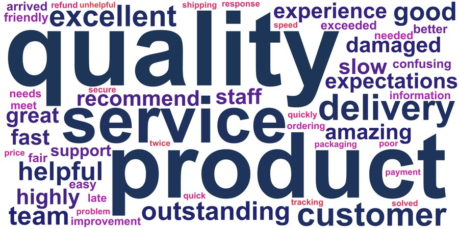
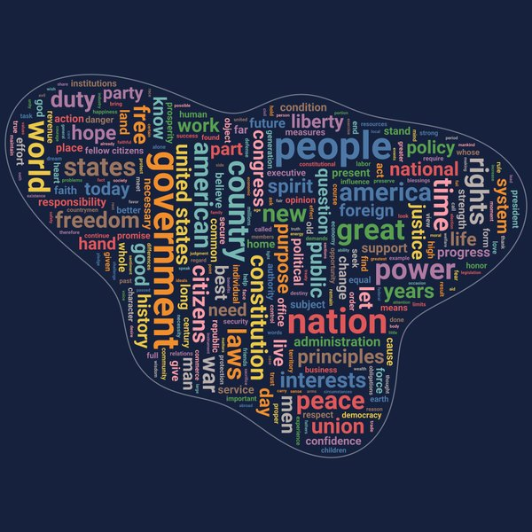
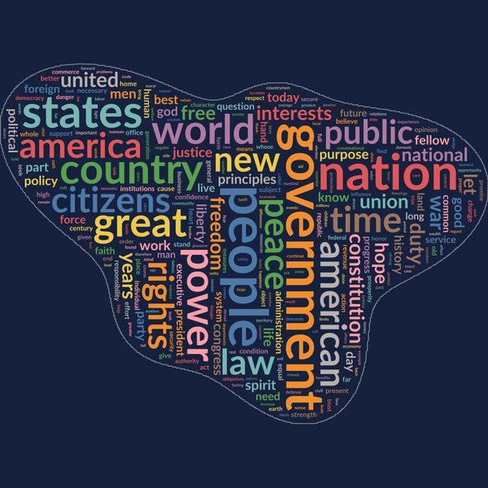
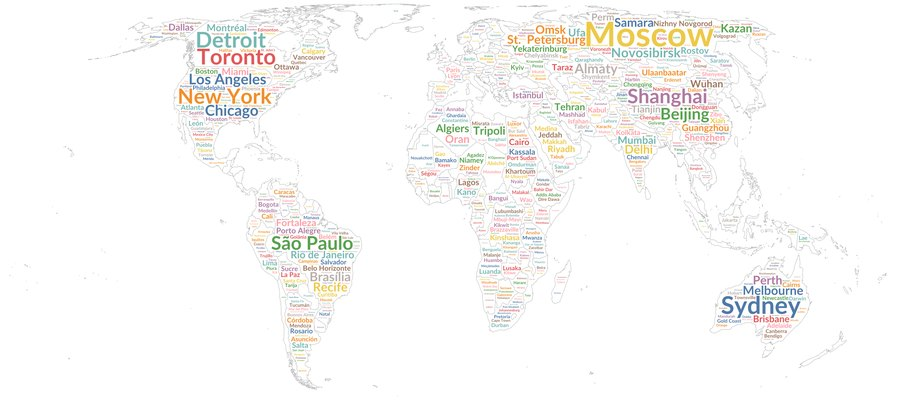
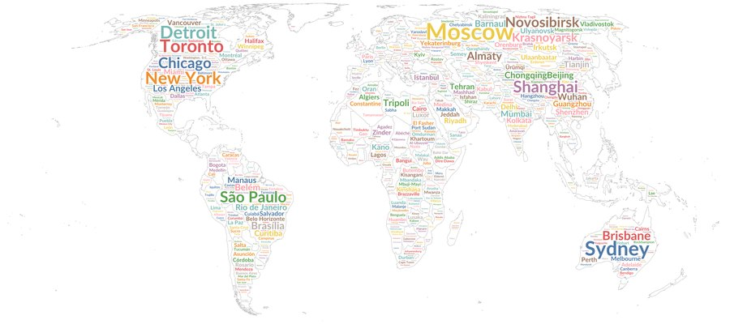
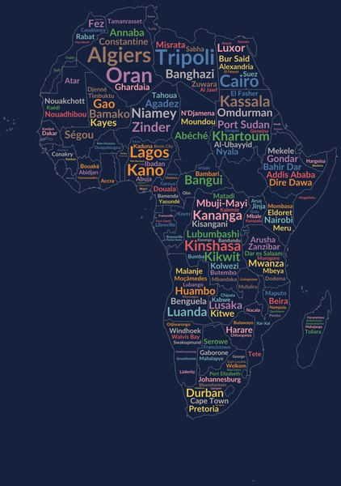
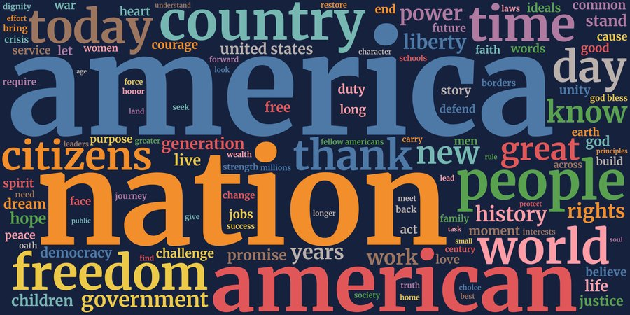
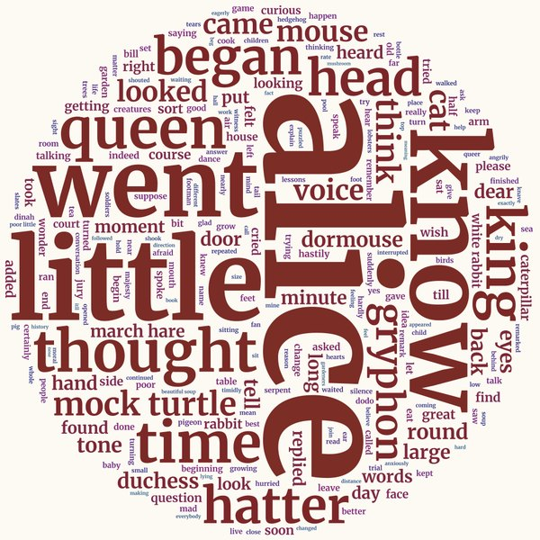
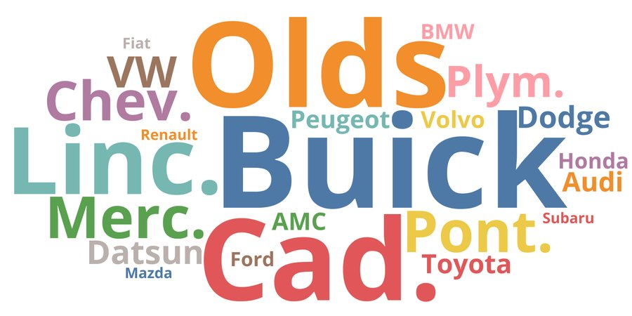
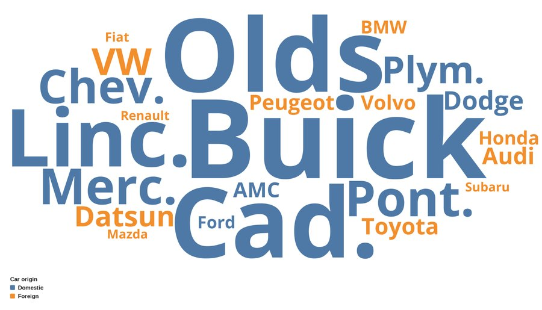

Survey responses
The basics: 16 open-ended answers, cleaned, counted and packed so no two words touch.
Stata code
calligram, textvar(response) minfreq(1)Word clouds in any shape, from survey text to maps. Every example below is a real page written by Stata: open one, then search, filter, hover, zoom, click the key, switch groups and save pictures.
Click any picture to open its interactive page.
The basics: 16 open-ended answers, cleaned, counted and packed so no two words touch.
calligram, textvar(response) minfreq(1)
Colours run from the most to the least frequent word.
calligram, textvar(response) minfreq(1) bgcolor(white) ///
gradient(#1d3557 #e63946) title("What customers said")Seven fonts are bundled, so the page looks the same on every computer.
calligram, textvar(response) minfreq(1) rotate(random) font(Roboto)Nine shapes are built in: rectangle, ellipse, circle, square, cloud, heart, diamond, triangle and star.
use cg_inaugural, clear
calligram, textvar(text) shape(heart) width(1000) height(900) ///
maxwords(250) rotate(random)outline draws the edge of the shape behind the words.
calligram, textvar(text) shape(star) outline width(1000) height(1000) ///
maxwords(250) font(Lato)
Points saved as _ID, _X, _Y form a one-area shapefile; the outline is exact.
calligram, textvar(text) shapes(cg_blob_shp.dta) projection(none) outline ///
width(1000) height(1000) maxwords(300) phrases rotate(90) font(Roboto)
Any black-on-white image works as a mask, including a Stata graph you export.
graph export cg_mask_blob.png, width(1000) replace
calligram, textvar(text) mask(cg_mask_blob.png) outline ///
width(1000) height(1000) maxwords(300) rotate(random) font(Lato)
A world shapefile and each city's latitude and longitude; size shows population.
use cg_cities, clear
calligram, wordvar(city) countvar(population) shapes(cg_countries_shp.dta) ///
location(lat lon) outline outlinewidth(1) outlinecolor(#b8b8b8) ///
width(2400) height(1067) maxwords(1207) minfreq(1) minfontsize(4) ///
margin(2) font(Lato) bgcolor(white)
near places every city as close as it can to its own point.
calligram, wordvar(city) countvar(population) shapes(cg_countries_shp.dta) ///
location(lat lon) near outline ...
keep and merge on the shapefile give any region you like.
use cg_countries, clear
keep if continent == "Africa"
keep _ID
merge 1:m _ID using cg_countries_shp, keep(match) nogenerate
save africa_shp, replace
use cg_cities, clear
calligram if continent == "Africa", wordvar(city) countvar(population) ///
shapes(africa_shp.dta) location(lat lon) outline width(900) height(1280)phrases finds pairs such as "united states" and "fellow citizens" and shows each as one entry.
use cg_inaugural, clear
calligram, textvar(text) phrases maxwords(200) font(Merriweather) ///
title("US inaugural addresses, 1789-2025")
by() puts each group in its own tab, and image() writes one picture per group.
calligram, textvar(text) by(century) phrases maxwords(120) font(Merriweather)
Alice's Adventures in Wonderland, with "mock turtle", "march hare" and "white rabbit" found as phrases.
use cg_alice, clear
calligram, textvar(text) phrases shape(circle) width(1000) height(1000) ///
maxwords(250) minfreq(3) rotate(random) font(Merriweather) ///
bgcolor(#fdfaf3) gradient(#7b2d26 #33658a)
wordvar() and countvar(): car makes in sysuse auto, sized by total price.
sysuse auto, clear
gen brand = word(make, 1)
calligram, wordvar(brand) countvar(price) minfreq(1) nostopwords ///
shape(ellipse) font(Open Sans) bgcolor(white)Every word counts with its response's weight (aweight, fweight).
calligram [aweight = weight], textvar(response) minfreq(1)saving() keeps every word with its count, size, position and colour.
calligram, textvar(text) phrases maxwords(100) saving(words, replace)
use words, clear
list rank word count fontsize in 1/1080,000 paragraphs, counted on all processor cores.
use cg_inaugural, clear
expand 50
calligram, textvar(text)Words as text with the font from Google Fonts: much smaller files, needs internet.
calligram, textvar(text) online font(Lato) maxwords(200)Each word gets the average year of the addresses it appears in.
calligram, textvar(text) colorby(year) gradient(#d95f02 #5e3c99) phrases ///
maxwords(200) font(Merriweather)Each word takes the colour of the century it is most typical of; click the key to hide a group.
calligram, textvar(text) colorby(century) phrases maxwords(200) font(Merriweather)
A labelled variable gives the categories and their names.
sysuse auto, clear
gen brand = word(make, 1)
calligram, wordvar(brand) countvar(price) colorby(foreign) minfreq(1) ///
nostopwords shape(ellipse) font(Open Sans) bgcolor(white)Each word takes the average colour of the picture under its letters.
calligram, textvar(text) shape(heart) colorimage(stripes.png) ///
width(1000) height(900) maxwords(250) rotate(random) bgcolor(white)